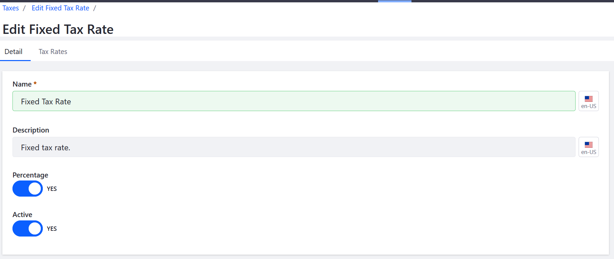
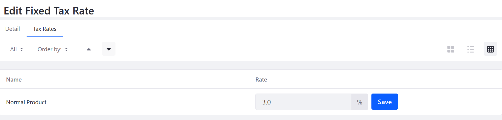

Setting a Fixed Tax Rate¶
Liferay Commerce supports two types of tax calculations: fixed and by address. The fixed method applies the same rate to a product each time it is purchased, while the by address method applies only to buyers within a specified geographical region.
A fixed tax method sets rates for each tax category independently. The tax collected then depends on the tax category assigned to a product.
First, enable the Fixed Tax Rate function:
Go to Site Administration → Commerce → Settings.
Click the Taxes tab and then the Tax Calculations sub-tab.
Click on Fixed Tax Rate.
Switch the Percentage toggle to YES if the tax should be defined as a percentage of the purchase price. Disable to define the tax as a fixed amount.
Switch the toggle to YES.

Click Save.
Next, set the tax rate for the tax category:
Click the Tax Rates sub-tab.
Enter the tax rate in the Rate field for each tax category.

Click Save.
Your store will now collect a fixed rate for all orders that fall under this tax category.